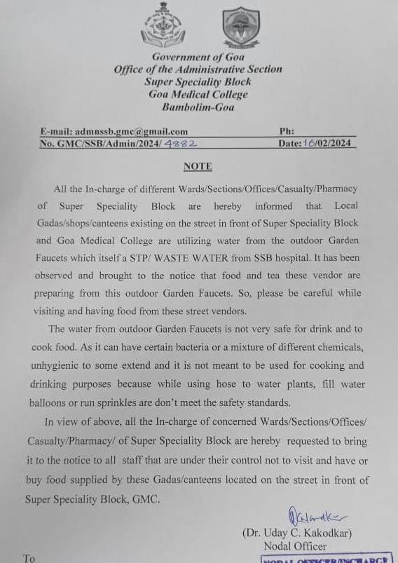

Note withdrawn after it went viral; kiosk owners say conspiracy to shut down businesses
OLD GOA
The nodal officer of GMC’s Super Speciality Block (SSB) Dr Uday Kakodkar issued a note on Friday advising the staff not to eat or buy food sold by kiosks, gaddas or canteens located on the roadside opposite the hospital.
The note was directed to all in-charges of wards/ sections/ offices/ casualty/ pharmacy of the super speciality hospital to request staff under their control not to visit the kiosks.
Ironically, the note pointed out that the kiosks, gaddas, canteens are using the water from the outdoor garden faucet which is a STP waste water from the SSB hospital.
“It has been observed and brought to the notice that food and tea these vendors are preparing from this outdoor garden faucets. So, please be careful while visiting and having food from these street vendors,” the note from Dr Kakodkar read.
Further, it added that “the water from outdoor garden faucets is not very safe to drink and to cook food. As it can have certain bacteria or a mixture of different chemicals, unhygienic to some extent and it is not meant to be used for cooking and drinking purpose”.
However, as the note went viral on media, the same was withdrawn with immediate effect on Saturday.
But, the damage had already been done and the doctor came in for sharp criticism from the stakeholders, particularly the kiosk owners themselves.
Though none of the kiosk owners wished to be named, they informed The Goan that it is a larger conspiracy to shut down their businesses.
“The conspiracy has been going on for a while now and this latest episode is just another attempt to bring in to disrepute the kiosk owners who are honestly doing their business,” a kiosk owner informed.
Another kiosk owner questioned, “Are we dumb to use water from the STP faucet of the SSB? People who bring their patients to the hospitals come to us as our food is hygienic and affordable.”
Yet another kiosk owner said that they bring water from their homes and never felt the need to use the STP water of the hospital.
“So, why such a note is being issued, only that doctor concerned would be able to tell. But, we suspect that officials of the hospital want to favour a private entity due to which they are resorting to such cheap tactics,” yet another kiosk owner stated.